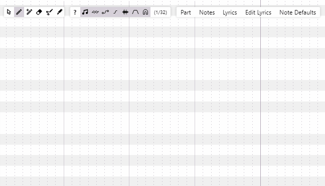

OpenUtau 零基础上手：让虚拟歌手开口唱歌，其实比你想的简单
第一次接触 OpenUtau？完全不懂乐理也能用它做出一段像样的虚拟歌声。这篇从下载安装到第一次跑通，带你五分钟上手，再聊三个新手最值得碰的功能和三个常见坑。
这篇能带你从完全不懂到用 OpenUtau 做出第一段自己的虚拟歌声——不需要乐理基础，不需要懂什么是声库，跟着点就行。
它到底是干嘛的：一个生活化类比
想象一下，你有一个永远不会累的歌手朋友。你弹一段旋律给他听（画音符），再把歌词念给他（输入歌词），他就能立刻唱给你听。而且这个朋友音色可以换——萝莉音、御姐音、少年音，想换哪个换哪个，每个音色就是一个「声库」。
OpenUtau 就是帮你和这个虚拟歌手沟通的那支话筒加指挥台。它本身不发声，但它能把你画的音符、写的歌词、选的声库，编排成一段完整的歌声让你听见。

五分钟上手：从下载到第一次跑通
第一步：拿到软件
OpenUtau 是开源免费的，直接去它的官网看一眼就会用——从官方下载页面拿对应系统版本就行。Windows 用户下载解压就能跑，macOS 和 Linux 也都有对应版本。如果你用的是 Arch Linux，甚至一条 AUR 命令就能装完。
装完解压（Windows）或者给个可执行权限（macOS/Linux），双击启动，你会看到一整块深色界面，中间有个灰色的区域——那就是你待会儿画音符的地方，叫 Piano Roll（钢琴卷帘）。
第二步：装一个声库
声库就是那个「虚拟歌手」的嗓子。没有声库，OpenUtau 就是个空壳。网上有很多免费声库可以下载，下载完是一个文件夹，里边通常有一堆音频片段和一个 oto.ini 文件。
把整个声库文件夹复制到 OpenUtau 的 Singers 目录下（Windows 在 %APPDATA%\OpenUtau\Singers，macOS 在 ~/Library/Application Support/OpenUtau/Singers）。重启 OpenUtau，新建一个项目，在轨道头上就能下拉选中刚装的声库了。
第三步：画几个音符
Piano Roll 左边是钢琴键，右边是时间轴。用工具栏里的笔工具在中间区域点几下，就能画出音符——每个音符是一个小方块，高度代表音高，长度代表时值。随便画三四个，比如 C D E 三个连续的音，每个画两拍长。

第四步：填歌词
双击第一个音符，进入歌词编辑模式。输入一个音节（比如日文的「あ」或者中文的「啊」），按 TAB 键跳到下一个音符继续输入——这是 OpenUtau 最高效的歌词输入法，一行歌词连输比逐个双击快好几倍。三个音符填完三个音节，按 Enter 确认。
第五步：点播放听效果
按空格键，或者点工具栏上的播放按钮，你应该能听到一段简单的旋律被声库唱出来了。🎉 恭喜，你第一次跑通了。
上手后先玩这三个功能
跑通之后别急着往里堆东西，先花十几分钟玩透下面三个功能——它们决定了你后续用 OpenUtau 的效率天花板。
功能一：滑音标记 +
一个音节跨多个音符演唱（比如一个长音里要拐两个弯），UTAU 老用户可能还记得要手动改 alias，很麻烦。OpenUtau 用一套极简规则解决了这个问题：只有第一个音符写实际音节，后面的音符直接写 +。音素器会自动把后面音符的音素续接到前一个音节上。
如果是英文这种多音节语言也不怕——每个音节换音的时候写实际音节，续接的时候写 + 就行。甚至还有个 +~ 标记，用来特别拉长尾音。这个小功能看起来不起眼，但用起来能省你改 alias 的半小时。
功能二：批量编辑工具栏
Piano Roll 顶部中间有一排按钮，这就是批量编辑的入口。如果没选中音符，批量工具会应用到整个轨道；选中了部分音符，只改选中区域。
里面有几个工具特别好用：Legato 能把相邻音符的重叠部分自动修平，吸附到 16 分音符网格能把散乱的音符对齐，甚至还有时间反转（Retrograde）这种做实验音效的高级玩法。歌词转换器还能批量把一种 alias 格式转换成另一种——比如换了声库之后 alias 格式不对，一个按钮全部替换。
功能三：GPU 加速（DirectML / CoreML）
如果你用的是 Windows 独显机或者 Apple Silicon Mac，这个一定要开。DiffSinger 是基于神经网络推理的，CPU 渲染一首三分钟的歌可能要十分钟到半小时，开了 GPU 加速之后能压到一到三分钟——快一个数量级。
Windows 用户进 Tools → Preferences → Machine Learning，把 Machine Learning Runner 改成 DirectML，GPU 下拉里选你的独显（别选核显），然后必须完全关掉 OpenUtau 再重开——GPU 加速是启动时初始化的，运行中改了不会立刻生效。macOS 的 CoreML 也类似，而且是系统内置能力，不用额外装东西。GPU 加速的参数还能进一步调优，需要时翻一翻openutau文档就行。
小白的三个常见疑问
疑问一：输入日文字母后没发音？
别慌，多半是音素器没选对。音素器是个后台自动展开歌词的东西——你输入一个日文音节，它会根据声库类型自动拆成正确的音素。打开轨道头附近的音素器下拉菜单，日文 VCV 声库选 JA VCV，日文 CVVC 选 JA CVVC，英文选 EN VCCV，中文选 ZH G2P-Kanna。选对音素器是出声音的前提条件，很多新用户卡在这里。
疑问二：Linux 上装完启动就闪退？
大概率是 .NET 8 运行时没装对。OpenUtau 依赖 .NET 8 桌面运行时，但 zip 包里不包含它——你需要单独跑微软的 dotnet-install.sh 脚本装一下。装完之后在终端执行 dotnet --list-runtimes，确认有 8.x 版本的桌面运行时再启动。另外 Linux 上 DiffSinger 只支持 CPU 渲染，GPU 加速暂时用不了。
疑问三：核显和独显到底选哪个？
Windows 笔记本经常有两个 GPU——核显（Intel UHD）和独显（NVIDIA/AMD）。GPU 加速设置里下拉选独显才能获得最大提速。核显的 DirectML 能力有限，快不了多少。如果你的机器只有核显也不是不能跑，就是速度慢一些。
下一步去哪
OpenUtau 的玩法远不止画音符填歌词——Piano Roll 里可以调 Pitch Bend 做颤音，Vibrato 参数能控制尾音抖动，音素器菜单里还有更精细的配置。等这篇里讲的五个步骤跑熟了，翻一翻进阶教程，或者换一个声库试试不同音色，你会发现这个工具能做的事情比想象的多得多。项目的相关资料在GitHub、Gitee、GitCode 三个平台都有同步，国内访问走 Gitee 或 GitCode 会更快一些。